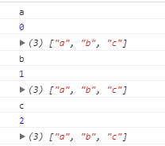
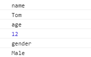

前言
之前总是不清楚原生JS和jQuery中有哪些循环遍历函数，而且有时候还总是把原生JS方法当成jQuery方法来用，以致于项目总是报错，并且还不知道是什么原因。所以，觉得有必要总结出来，区分一下。
DOM对象和jQuery对象如何互相转换？
首先，先说一下DOM对象和jQuery对象如何转换？这样原生JS和jQuery的方法，我们就可以随意使用了。
1.DOM对象—> jQuery对象
只要给DOM元素外加$() 就可以了,如 $(document.getElementById("dv")) 。
2.jQuery对象—>DOM对象
有两种方法：
（1）jQuery对象[0]，如$(“.cls”)[0];
（2）jQuery对象.get(0)，如$(“.cls”).get(0)。
原生JS循环遍历函数
1.for()
for循环得知道数组的长度才能循环。它比较常用，这里就不多说了。
2.forEach ()
不需要知道数组长度，也可以对数组中每一个元素进行操作。
1 | var arr = ["a","b","c"]; |
运行结果如图所示：

3.every()
every() 方法用于检测数组所有元素是否都符合指定条件（通过函数提供）。
every() 方法使用指定函数检测数组中的所有元素：
如果数组中检测到有一个元素不满足，则整个表达式返回 false ，且剩余的元素不会再进行检测。
如果所有元素都满足条件，则返回 true。
1 | var arr1 = [2,4,6,1]; |
4.some()
some() 方法用于检测数组中的元素是否满足指定条件（函数提供）。
some() 方法会依次执行数组的每个元素：
如果有一个元素满足条件，则表达式返回true , 剩余的元素不会再执行检测。
如果没有满足条件的元素，则返回false。
注意： some() 不会对空数组进行检测。
注意： some() 不会改变原始数组。
1 | var arr = [2,4,6,1]; |
5.map()
map() 方法返回一个新数组，数组中的元素为原始数组元素调用函数处理后的值。
map() 方法按照原始数组元素顺序依次处理元素。
注意： map() 不会对空数组进行检测。
注意： map() 不会改变原始数组。
1 | var arr = [2,4,6,1]; |
6.filter()
filter() 方法创建一个新的数组，新数组中的元素是通过检查指定数组中符合条件的所有元素。
注意： filter() 不会对空数组进行检测。
注意： filter() 不会改变原始数组。
1 | var arr = [2,4,6,1]; |
7.for(var x in arr/obj)
for in 既可以循环遍历数组，也可以循环遍历对象
（1）遍历数组
1 | var arr = [2,4,6,1]; |
（2）遍历对象
1 | var obj = { |
结果如图所示：

jQuery循环遍历函数
1.each()
1 | var arr = ["x","y","z"]; |
2.map()
用于使用指定函数处理数组中的每个元素(或对象的每个属性)，并将处理结果封装为新的数组返回。
1 | var arr = ["x","y","z"]; |
3.grep()
使用指定的函数过滤数组中的元素，并返回过滤后的数组。
提示：源数组不会受到影响，过滤结果只反映在返回的结果数组中。
1 | var arr = ["x","y","z"]; |
4.inArray()
函数用于在数组中查找指定值，并返回它的索引值（如果没有找到，则返回-1）
提示：源数组不会受到影响，过滤结果只反映在返回的结果数组中。
1 | var arr = ["x","y","z"]; |
5.filter()
返回符合一定条件的元素。
该方法让您规定一个条件。不符合条件的元素将从选择中移除，符合条件的元素将被返回。
该方法通常用于缩小在被选元素组合中搜索元素的范围。
1 | var result = $("div").filter(".cls"); //返回类名是cls的div元素 |